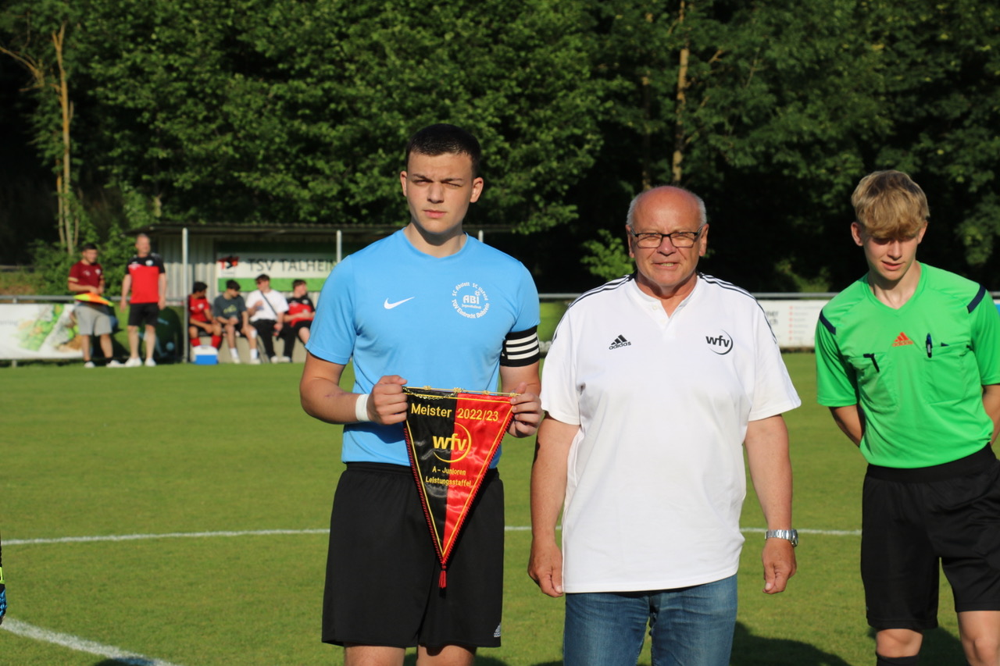

TSV Talheim vs. SGM ABI — 0:6 und Wimpelübergabe
Wie bereits zum letzten Spiel berichtet, sind wir Meister in unserer Staffel und das seit dem 13.05. durch die langen Pausen in der Saison mussten wir knapp einen Monat später zu unserem letzten Auswärtsspiel nach Talheim. Kurz vor dem Spiel ein Anruf von Herrn Nied, er würde in Vertretung für unseren Staffelleiter Herr Falk die Wimpelübergabe machen. So bekamen wir vor der Partie unseren verdienten Meisterwimpel übergeben. Wer jetzt meint, wir würden deshalb das Spiel nicht ernst nehmen, da die Saison für uns ja schon zu Ende ist, der hatte sich getäuscht. Bei unserem Gegner geht es noch um den zweiten Platz und den damit verbundenen Relegationsplatz, dementsprechend wollten wir uns nichts nachsagen lassen und gingen mit dem nötigen Ernst und Biss in das Spiel.
Zum Spiel braucht man nicht viel sagen, in die Halbzeit gingen wir mit einer 0:4 Führung und wir hätten in der ersten Hälfte das Ergebnis noch höher schrauben können. In Hälfte zwei brauchten wir ein wenig, um das enorme Tempo der ersten Hälfte wieder zu erreichen, erzielten dann aber nach einem sehr sehenswert heraus kombiniertem Angriff das 0:5 und konnten vor kurz vor dem Ende das Endergebnis noch auf 0:6 stellen.
Auch wenn wir phasenweise unserem Gegner Chancen boten zu einem Treffer, schaffte es im gesamten Spiel noch jemand im letzten Moment die Chancen der Talheimer zu blocken, auf der anderen Seite kam Talheim durchaus gnädig davon, denn wir haben eine Menge hochkarätige Chancen vergeben.
Es waren dabei: Timo, Aaron, Lukas, Ryan, Fabi, Noah, Finn (1x), Enis (1x), Philipp (2x), Nico, Ehil (1x), Enrico (1x), Zaid, Robin, Andrew, Yannick, Talha, Linus und Jonas.